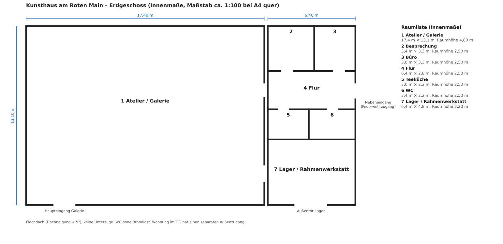
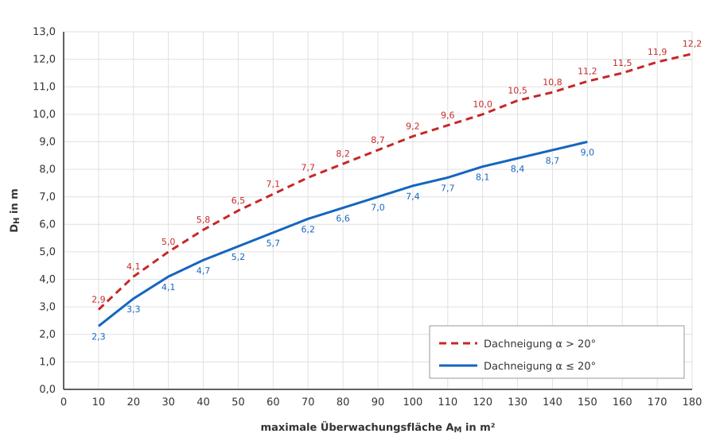

Lernsituation 4 · Brandmeldeanlagen
Überwachungsfläche AM · DH-Maß · Melderraster · Installationsplan
Informationselektroniker/-in · Gebäude- und Sicherheitstechnik · LF 9 · Jgst. 12 · Leitsituation: Kunsthaus am Roten Main
Mail vom Meister
Stimmt das? Wovon hängt die Melderanzahl ab?
Grundriss EG

Grundregel DIN VDE 0833-2
Kein Melder überwacht mehr als AM (Tabelle).
Kein Deckenpunkt ist weiter als DH vom nächsten Melder entfernt (Diagramm).
Schritt 1
| Raumfläche | Melder | Höhe | α ≤ 20° | α > 20° |
|---|---|---|---|---|
| bis 80 m² | Rauch | bis 12 m | 80 m² | 80 m² |
| über 80 m² | Rauch | bis 6 m | 60 m² | 90 m² |
| über 80 m² | Rauch | 6–12 m | 80 m² | 110 m² |
| bis 30 m² | Wärme | bis 6 m | 30 m² | 30 m² |
| über 30 m² | Wärme | bis 6 m | 20 m² | 40 m² |
Schritt 2

Musterbeispiel · Atelier
A = 17,40 m · 13,10 m = 227,94 m² > 80 m², h ≤ 6 m, α ≤ 20° → AM = 60 m²
Diagramm: DH = 5,7 m
nmin = 227,94 / 60 = 3,8 → 4 Melder
Raster 2 × 2: 8,70 m × 6,55 m = 56,99 m² ≤ 60 m² ✓ · r = √(4,35² + 3,275²) = 5,45 m ≤ 5,7 m ✓
Achtung Falle
Halle 36 m × 20 m, h = 8 m → AM = 80 m², DH = 6,6 m → nmin = 9
| Raster | Feld | a·b ≤ 80? | r ≤ 6,6 m? | |
|---|---|---|---|---|
| 3 × 3 = 9 | 12 × 6,67 m | 80 ✓ | 6,86 ✗ | ❌ |
| 5 × 2 = 10 | 7,2 × 10 m | 72 ✓ | 6,16 ✓ | ✅ wirtschaftlich |
| 4 × 3 = 12 | 9 × 6,67 m | 60 ✓ | 5,60 ✓ | ✅ aber teurer |
Einzeichnen
H1 Wo fange ich an?
H2 DH ablesen
H3 Raster prüfen
liegen umgedreht am Pult
Ziele
Arbeitsauftrag
Lehrervortrag mit Musterbeispiel oder IB 4 selbstständig
AB 4: Teil A Berechnung · Teil B Plan · Teil C Materialliste
Lösungskarte Atelier + Partnercheck
AB 4-Ü Basis oder Erweiterung
Antwort an den Meister mit Zahlen
Lösung Kunsthaus
| Raum | A | Typ | AM / DH | Melder |
|---|---|---|---|---|
| 1 Atelier | 227,94 m² | RM | 60 / 5,7 | 4 |
| 2 Besprechung | 11,22 m² | RM | 80 / 6,6 | 1 |
| 3 Büro | 9,90 m² | RM | 80 / 6,6 | 1 |
| 4 Flur | 17,92 m² | RM | 80 / 6,6 | 1 |
| 5 Teeküche | 6,60 m² | WM | 30 / 4,1 | 1 |
| 7 Lager | 30,72 m² | WM | 20 / 3,3 | 2 |
| Summe + 3 Handfeuermelder | 7 RM + 3 WM | |||